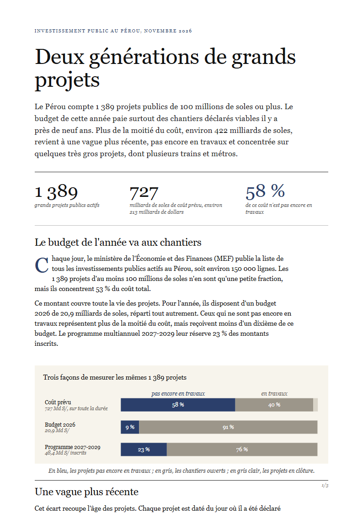

Portafolio · Version française
El Ministerio de Economía y Finanzas del Perú (MEF) publica cada día, en datos abiertos, la lista de sus inversiones públicas activas, unas 150 000. Este pipeline de datos en Python archiva cada versión del archivo, calcula indicadores sobre los proyectos de S/ 100 millones o más, detecta lo que cambia de una semana a otra, sigue las convocatorias de ProInversión y genera una nota y un mapa.

Una pregunta sencilla: en la inversión pública peruana, ¿a dónde va el dinero hoy y dónde estarán los proyectos de mañana?
El presupuesto de este año financia sobre todo obras declaradas viables hace casi nueve años. La siguiente ola, más de la mitad del costo, sigue en papel y se concentra en una decena de proyectos muy grandes, entre ellos varios trenes y líneas de metro.
La nota se limita a lo que muestra el archivo del MEF: nada sobre contratos, empresas o contexto político. Se recalcula con cada nueva versión.
Leer la nota (PDF, 3 páginas) (en francés)
Abrir el mapa interactivo (leyenda en francés): cada círculo es un proyecto, su tamaño sigue el costo y su color, el sector.
MEF, Banco de Inversiones (datos abiertos); BCRP, tipo de cambio; ProInversión, investinperu.pe. Mapa base: © colaboradores de OpenStreetMap.